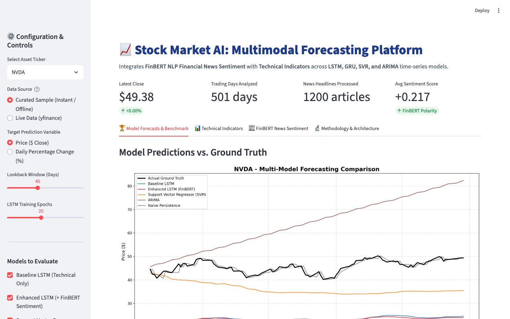
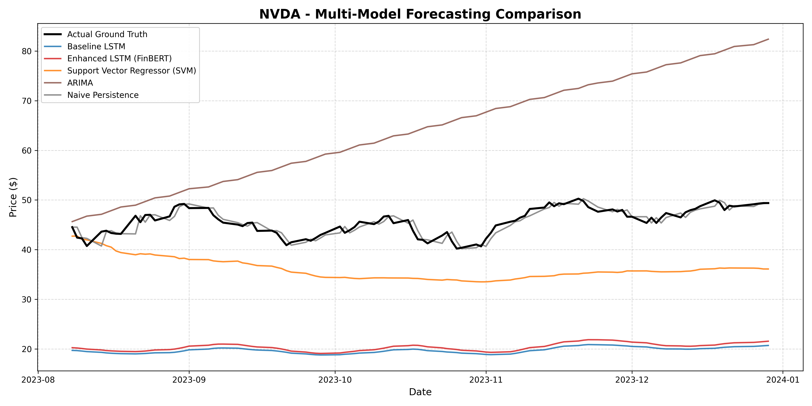
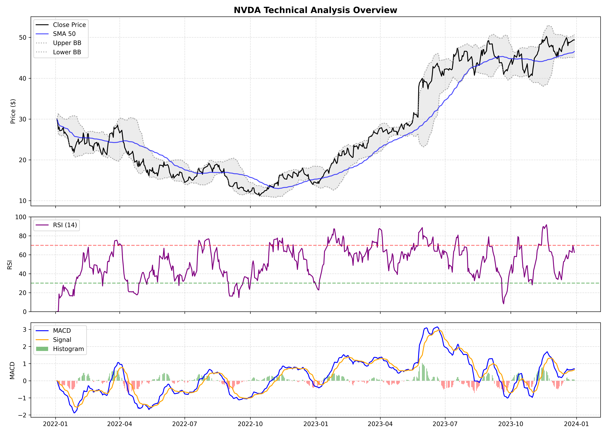
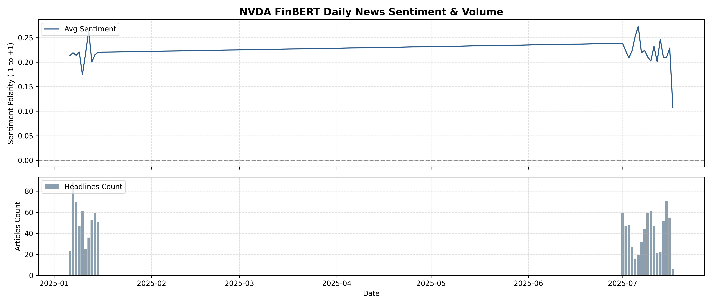

Bridging qualitative news sentiment with quantitative price-action indicators. Combining PyTorch LSTMs, Support Vector Regressors, and statistical ARIMA models into an interactive, portfolio-grade demo platform.
Key engineering challenges overcome while designing, refactoring, and delivering this production-grade machine learning system.
Consolidated two fragmented projects (stock-data-collection and stock-market-analysis) into a unified, clean monorepo architecture. Eliminated broken file paths, untracked 360+ MB of raw bulk CSVs, and packaged a lightweight sample dataset (<200KB) for instantaneous offline demo execution.
Integrated ProsusAI/finbert (a specialized BERT language model fine-tuned on financial phrasebanks) with automatic Apple Silicon (MPS), CUDA, and CPU detection. Aggregated headline polarity scores, positive/negative ratios, and article volumes into continuous daily time-series features.
Re-architected the time-series sliding window preprocessor. Scalers (MinMaxScaler) are fitted strictly on historical training partitions before transforming test windows, ensuring that test metrics realistically simulate live, real-world deployment without lookahead bias.
Data IntegrityEngineered modular PyTorch LSTM/GRU neural networks with early stopping and AdamW optimization. Implemented Support Vector Regression (SVR) on flattened sequence representations and statistical ARIMA baselines to validate performance gains under rigorous metrics.
Deep Learning
Experience the responsive interface built for real-time asset selection, technical exploration, and comparative model inference.
🚀 Open Live Streamlit App (stock-market-analysis-sandy.streamlit.app)

Evaluating 5 forecasting models on 2 years of daily market data for NVIDIA (NVDA) with a 45-day lookback window.
| Rank | Model Architecture | Feature Set | RMSE ↓ | MAE ↓ | MAPE (%) ↓ | Directional Accuracy (%) ↑ |
|---|---|---|---|---|---|---|
| 🥇 #1 | Enhanced LSTM (FinBERT) | Technical Indicators + News Sentiment | 25.3714 | 25.2677 | 55.29% | 59.0% |
| 🥈 #2 | Baseline LSTM | Technical Indicators Only | 26.0154 | 25.9085 | 56.69% | 60.0% |
| 🥉 #3 | Support Vector Regressor (SVM) | Flattened 2D Sequences | 10.1076 | 9.5390 | 20.65% | 55.0% |
| #4 | ARIMA (3, 1, 0) | 1D Historical Series | 20.8092 | 18.3930 | 40.17% | 56.0% |
| #5 | Naive Persistence | Lag-1 Value ($P_t = P_{t-1}$) | 1.0335 | 0.8125 | 1.80% | 52.0% |

A dual-lens view combining quantitative momentum oscillators with qualitative sentiment polarity.
Computes 7 mathematical market features: Simple Moving Averages (SMA 50, SMA 200), Exponential Moving Average (EMA 20), Relative Strength Index (RSI 14), Moving Average Convergence Divergence (MACD, Signal, Histogram), Bollinger Bands (20 periods, 2σ), and On-Balance Volume (OBV).

Transforms unstructured news headlines into quantitative polarity scores $[-1.0, +1.0]$ using ProsusAI/finbert. Daily metrics capture market euphoria and panic: average sentiment polarity, news volume frequency, and positive-to-negative sentiment ratios.

Modern technologies powering data acquisition, deep learning inference, and interactive visualization.